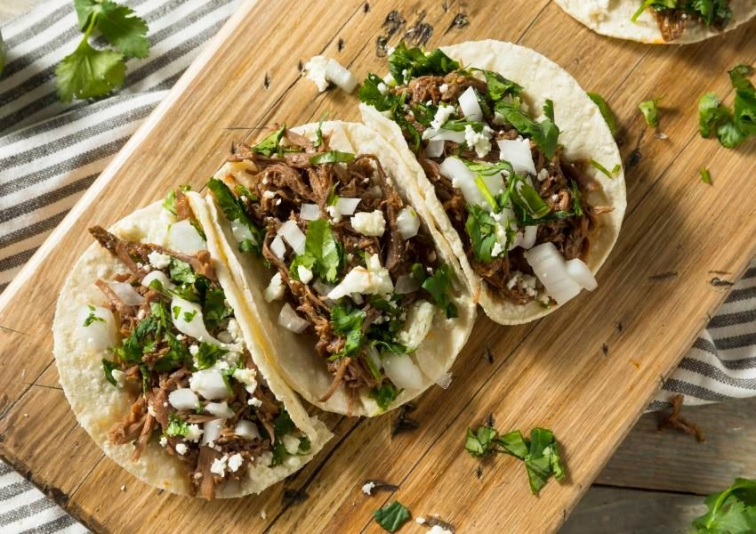

Authentic Street Tacos Recipe

Descripton
These authentic Mexican street tacos make for a great date dish!
Or double the batch size for a dinner party! Everyone loves these tacos!
Ingredients
- Flank or skirt steak
- Corn tortillas
- Spices
Steps
- Mix steak and spices in a bowl
- Let sit for 30 minutes
- Heat olive oil in a large pan on medium-high heat, then add steak
- Cook steak while stirring occasionally for 8 minutes
- Build tacos with corn tortillas and any desired toppings, and enjoy!